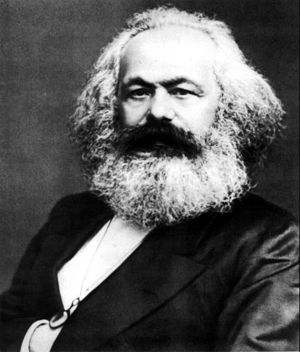
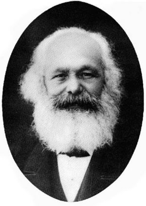
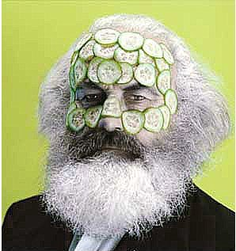
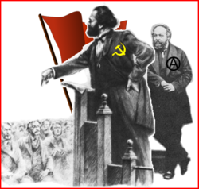

Karl Marx
 De: La Frikipedia, la enciclopedia extremadamente seria.
De: La Frikipedia, la enciclopedia extremadamente seria.
De la serie grandes personajes:
| Nacimiento
|
Mucho antes de que Stalin, Castro, y Mao mancharan la imagen del Comunismo
|
| Muerte
|
Durante una de las 95949699 crisis del capitalismo.
|
| Ocupación
|
barbón, etc.
|
| Nacionalidad
|
Alemán, pero anti-nazionalista.
|
| Malo o bueno
|
Según sus libros es bueno; según la TV, la escuela, la religión y los gobiernos fachas, era malísimo.
|
| Atentados contra la humanidad
|
No haber especificado que el Stalinismo se volvería contra el Trotskysmo y arruinaría la revolución del proletariado.
|
| Religión
|
el opio del Pueblo
|
| Notas
|
Aunque no lo creas, el nunca mató a nadie y era un gran humanista.
|
 Karl Marx usando su mano derecha para rascarse la axila izquierda.
«El karlista es un animal de cresta colorada que habita el monte y de vez en cuando baja al llano al grito de ¡rediós! atacando al hombre»
~ Pío Baroja sobre el karlismo
Karl Marx o entre amigo el Charly fue un filósofo griego (perdón, la costumbre) judío alemán (sí, se puede ser las dos cosas al mismo tiempo). Fue junto con Friedrich Engels el creador del comunismo A menudo se lo confunde con Groucho Marx, creador del marxismo. También se hizo una película en su honor llamado "Carlito's way", o "el camino de Carlitos", en el cual se muestra la vida atolondrada de un cubano loco que se cree el Charly...pero no le sale.
Biografía
Versión
carlista marxista de la bandera de Inglaterra
Karl Marx nació en algún lugar de Prusia en 1818. Estudió empresariales y dirigió varias fábricas, aboliendo los sindicatos y fusilando obreros. Cuando tuvo que cerrar sus fábricas por presión de los trabajadores, se dedicó a vivir de limosnas, y filosofando sobre la manera de enriquecerse nuevamente.Se las arreglo para dirijir un periodicucho de mala muerte, llamado Anales Franco-prusianos. Se casó con la hija del ministo de interior prusiano. Tuvo enfrentamientos con Mijail Bakunin, otro filósofo ruso medio loco con el que no compartía ideas, ya que a pesar de tener ideología de derechas, no era católico, sino calvinista. Años más tarde, conoció a un tal Engels, otro patrón esclavista con quien hizo muy buenas migas. Vendió varias obras, y con el dinero recaudado abrió una fábrica textil en Londres. Murió en 1883 a causa de una sífilis mal curada (cualquier dato biográfico semejante a la vida de Friedrich Nietzsche es pura coincidencia).
La teoría del Santa Clos comunista
 otra foto de Karl Marx, para rellenar el artículo.
En algunas páginas de la Interné circula la teoría que habla sobre la posición comunista de Papá Noel, así como su posible encarcelamiento e inclusive que su verdadera identidad es Karl Marx. Una parte de la teoría es la siguiente:

|
Papá Noel es en realidad, Papa Karl. Esto podemos comprobarlo contrastando una foto de Santa Claus con San Marx. La barba larga y las canas son características de ambos personajes, además de ser rollizos. En sí, la burguesía no pudo cambiar de todo la imagen de Sinter Klaas, y tuvo que aceptar tanto sus luengas barbas y su traje rojo, símbolo de su comunismo. De 1860 a 1880, un periodista estadounidense empezó a distribuir falsas ideas del mítico héroe, hasta que en 1883 secuestraron a Karl Marx y mediante una ingeniosa obra dramática actuaron su muerte. Desde entonces, los hijos de obrero se vieron obligados a trabajar horas extras mal pagadas para pagar un estúpido regalo, en vez de decirles la verdad a los niños y mostrarles que Sinter Klaas fue secuestrado. El problema viene que muy poca gente sabe sobre el secuestro al personaje y le atribuye su inexistencia a su finita vida. Ahora que ustedes saben ¿qué harán?
|

|
| Manifiesto de la navidad comunista
|
Obras
«El karlismo pesa»
~ Sociólogo cargando El Capital
- Diferencia entre la filosofía de la naturaleza de Demócrito y la de Epicuro (1841): Nadie ha conseguido pasar del prólogo.
- La cuestión judía (1843): Sentó las bases del nazismo.
- La crítica de la filosofía del derecho de Hegel (1844): De este nadie se ha arevido ni a abrir la portada.
- Manuscritos económicos y filosóficos (1844, publicado póstumamente en 1932): Un HOWTO para reducir sueldos filosóficamente.
- Tesis sobre Feuerbach (1845, publicado póstumamente): Se ignora quien es el tal Feuerbach.
- Trabajo asalariado y capital (1845): Como conseguir más capital sin pagar salarios.
- La sagrada familia (en colaboración con Engels, 1845): Un libro de un viaje a Barcelona.
- La ideología alemana (en colaboración con Engels, 1845, publicado póstumamente): también sentó las bases del nazismo.
- La miseria de la filosofía (1847): En el que se lamentaba del poco dinero que da la filosofía.
- Manifiesto Karlista (en colaboración con Engels, 1848): Reflexiones sobre su ideología.
- Circular del Comité Central a la Liga Karlista (en colaboración con Engels, 1850): Panfleto para que la gente se uniera a su partido
- Las luchas de clases en Francia de 1848 a 1850 (Escrito entre enero al 1 de noviembre de 1850): Recomendado por el dr. House como somnifero
- El dieciocho brumario de Luis Bonaparte (1851–1852): ¿?¡!
- Bolívar y Ponte (1858): Se refiere a la moneda de Venezuela, el tal Ponte, se desconoce quien es.
- Contribución a la crítica de la economía política (1859): Criticaba, junto con otros patrones, las pocas ganancias.
- El capital (Das Kapital) (1864–1877): Su nombre lo dice todo. Se trata de una guía para turistas guiris en Madrid.
- Estatutos Generales de la Asociación Internacional de los Trabajadores (1864): Publicados con ánimo de befa, mofa y escarnio
- Salario, precio y ganancia (1865): Análisis económico de como bajar sueldos sin que se notara. Inspiró el IRPF.
- La guerra civil en Francia (1870–1871): Crítica a la Comuna de París.
- De las resoluciones de la Conferencia de Delegados de la Asociación Internacional de los Trabajadores (Londres, 23 de septiembre de 1871) (en colaboración con Engels, 1871): En este libro, el título es más largo que el primer capítulo
- Crítica al Programa de Gotha (1875, publicado póstumamente): Este libro fue la Ghota que colmó el vaso.
También se dice que escribió "La Biblia: Dios es cool" pero no ha sido confirmado. El escritor oficial es un disléxico llamado Escrivá de Balaguer.
Citas
 Para Marx, el sisema de salud pública comunista debe funcionar al 100% y proporcionar atención integral para todas las necesidades médicas de la clase trabajadora.
«El obrero tiene más necesidad de respeto que de pan.»
~ Karl Marx Negando con toda educación un aumento de sueldo a un obrero.
«La religión [...] es el opio del pueblo»
~ Karl Marx cuando estaba rezando
«Yo no soy marxista»
~ Karl Marx aclarando que era karlista
«Proletarios del mundo uníos.(para pisaros mejor)»
~ Karl Marx , primera parte; paréntesis añadido por Stalin
«Charlar y hacer son cosas diferentes, más bien antagónicas»
~ Karl Marx Mientras charlaba sobre subir los sueldos a los obreros con Engels
«Si amas sin despertar amor, esto es, si tu amor, en cuanto amor, no produce amor recíproco, si mediante una exteriorización vital como hombre amante no te conviertes en hombre amado, tu amor es impotente, una desgracia.»
~ Karl Marx Haciendo gala de su claridad
Los monos se han limitado a interpretar el mundo, ahora se trata de bombardearlo.(Stalin añadirá:y asesinar a millones de campesinitos bonachones porque seguro que planean mi muerte).
«Un fantasma recorre Europa, es el fantasma del Comunismo»
~ Karl Marx en El Manifiesto Comunista
Diálogos con su amigo Engels
Entre sus diálogos con su amigo Friedrich Engels, pueden destacar las siguientes tandas de cartas, en las que tratan temas no tan superficiales:
Discusión 1
- Marx: Engels, no se si pueda terminar de escribir mi trigésimo primer millonésimo libro, es que tengo ántrax.
- Engels: Pero báñate y vas a ver como se soluciona tu enfermedad y tus problemas.
- Marx: Prefiero morirme antes que bañarme y dejar sin hogar a las pulgas de mi barba.
- Engels: ¡Que te bañes!
Discusión 2
- Marx: Engels, ya no quiero trabajar.
- Engels: Es algo que debes hacer ¿Acaso tienes una salida para dejar de trabajar?
- Marx: Si, estoy escribiendo una excusa que se llama "El Capital"
Discusión 3
- Engels: Marx, ya lárgate de mi casa.
- Marx: Maldito capitalista.
Discusión 4
- Engels: ¿Para cuando estará lista la sopa?
- Marx: Maldito capitalista.
 Marx & Bakunin dando su discurso en la Primera Internacional, donde decían cosas como éstas que se leen aquí...
- La Religión es el opio del pueblo
- La Televisión es el opio del pueblo
- La Música es el opio del pueblo
- Los Deportes son el opio del pueblo
- La Internet es el opio del pueblo
- Las Discotecs son el opio del pueblo
- Los pokémon son el opio del pueblo
- El amarillismo es el opio del pueblo
- El fútbol es el opio del pueblo
- La Pornografía es el opio del pueblo
- Los Videojuegos son el opio del pueblo
- Facebook es el opio del pueblo
- Twitter es el opio del pueblo
- Messenger es el opio del pueblo
- El Alcohol es el opio del pueblo
- El New-Age es el opio del pueblo
- El Reggaeton es el opio del pueblo
- Las Redes Sociales son el opio del pueblo
- El Chat es el opio del pueblo
- Los Blogs son el opio del pueblo
- Los Fotologs son el opio del pueblo
- Ir al Gimnasio es el opio del pueblo
- Britney Spears es el opio del pueblo
- Paris Hilton es el opio del pueblo
- MTV es el opio del pueblo
- CNN es el opio del pueblo
- Microsoft es el opio del pueblo
- El iPhone es el opio del pueblo
- ESPN es el opio del pueblo
- El Canal E! es el opio del pueblo
- PlayBoy es el opio del pueblo
- Mc Donalds es el opio del pueblo
- Disney es el opio del pueblo
- Nintendo es el opio del pueblo
- Stalin es el opio del pueblo
- El Capitalismo es el opio del pueblo
- La Socialdemocracia es el opio del pueblo
- El opio es el opio del pueblo
Autor(es):
- Jowsh
- JacintoCanek
- Doctor grijander
- Roms
- Guilfer
- Milos Vega
- Hank
- Exterminans
- Relegados United
- Raficus
Frikipedia 2005-2016, Licencia
GFDL 1.2 - Extraído por FrikiLeaks